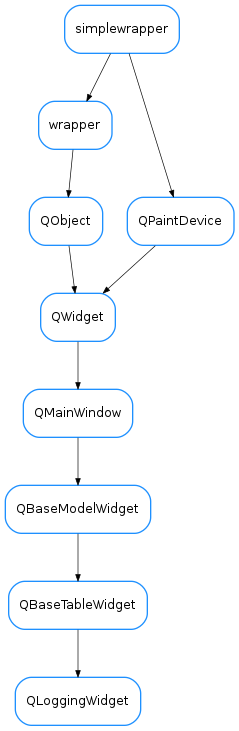

QLoggingWidget¶

-
class
QLoggingWidget(parent=None, designMode=False, with_filter_widget=<class 'taurus.qt.qtgui.table.qlogtable.LoggingToolBar'>, with_selection_widget=True, with_refresh_widget=True, perspective=None, proxy=None)[source]¶ Bases:
taurus.qt.qtgui.table.qtable.QBaseTableWidget-
DftPerspective= 'Standard'¶
-
KnownPerspectives= {'Remote': {'model': [<class 'taurus.qt.qtgui.table.qlogtable.QLoggingFilterProxyModel'>, <class 'taurus.qt.qtgui.table.qlogtable.QRemoteLoggingTableModel'>], 'icon': 'network-server', 'tooltip': 'Monitor remote logs.\nWarning: Switching log perspective will erase previous log messages from current perspective!', 'label': 'Remote'}, 'Standard': {'model': [<class 'taurus.qt.qtgui.table.qlogtable.QLoggingFilterProxyModel'>, <class 'taurus.qt.qtgui.table.qlogtable.QLoggingTableModel'>], 'icon': 'computer', 'tooltip': 'Local logging.\nWarning: Switching log perspective will erase previous log messages from current perspective!', 'label': 'Local'}}¶
-